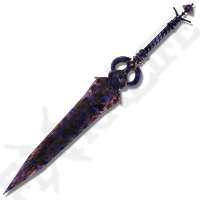
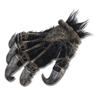
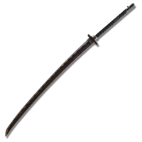
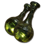
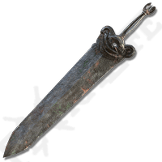

Machado Longhaft - Um machado forjado para guerreiros de elite.
Preço: 5000 Ouro

Faca Butcher - Ideal para cortar defesas inimigas.
Preço: 4000 Ouro

Rapier Antspur - Espada fina e letal para ataques rápidos.
Preço: 3500 Ouro

Espada Cristalizada Podre - Danos venenosos em golpes certeiros.
Preço: 6000 Ouro

Garras de Besta - Ferramentas selvagens para ataques ágeis e letais.
Preço: 7500 Ouro

Grande Katana - Cortes poderosos com estilo oriental tradicional.
Preço: 8000 Ouro

Perfume de Veneno Mortal - Envenene seus inimigos com classe.
Preço: 2000 Ouro

Espadão dos Cães de Guarda - Uma lâmina colossal para bravos.
Preço: 9000 Ouro